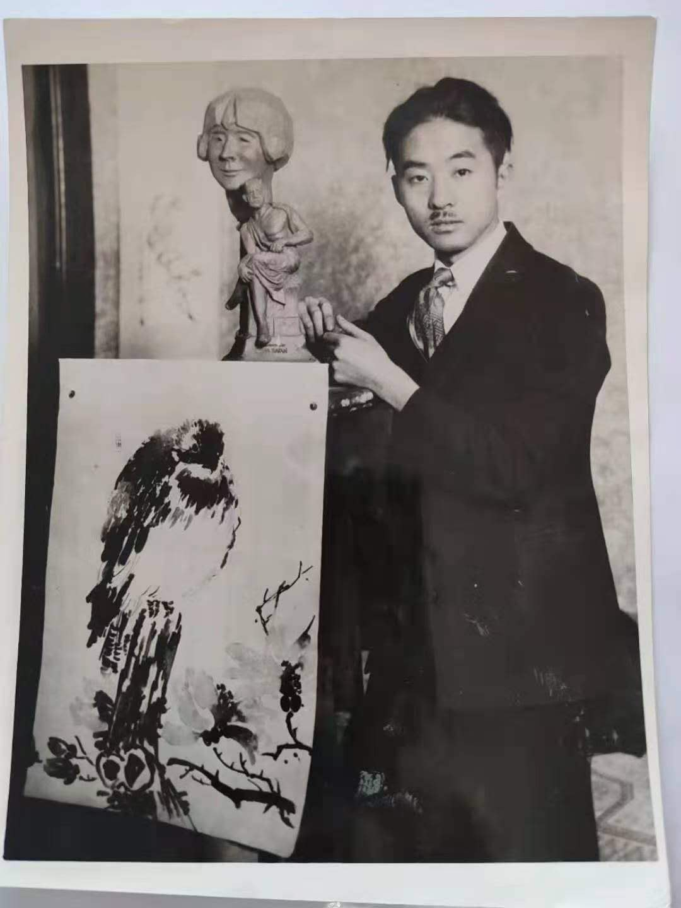

滕白也与绘画、雕塑Teng Baiye with a painting and sculpture
S326 · ACME · 1927
照片呈现滕白也与一幅花鸟画、一件人物雕塑。背面英文说明以Kwei Dun称呼他，记其在华盛顿大学就读，以指尖和指甲绘画、塑形。供稿栏有ACME字样，打字日期为“NOV 19”；另盖“NOV 28 1927”日期章。The photograph shows Teng Baiye with a bird-and-flower painting and a figure sculpture. The reverse names him Kwei Dun, identifies him as a University of Washington student, and describes his use of fingertips and nails to paint and model. Its distribution line bears ACME, the typed date reads “NOV 19”, and a separate stamp reads “NOV 28 1927”.

背面说明与日期章Caption and date stamp on the reverse

说明称他用指尖和指甲完成绘画及塑像，并将这种方法称为中国古老的艺术。说明中“美国四位指画家之一”的说法为通讯社原文，未见统计依据。The caption describes painting and modeling with fingertips and nails as an ancient Chinese art. Its claim that he was one of four finger painters in America is an assertion in the press caption, without an identified statistical basis.
1927年据背面日期章。11月19日是说明所署月日，11月28日是日期章所示月日，均不能直接视为拍摄日期。摄影者、画作及雕塑题名未署。The year 1927 comes from the date stamp. Neither the typed November 19 date nor the November 28 stamp establishes the day the photograph was taken. The photographer and the titles of the two works are not identified.
华盛顿大学1927年授位名册列Dun, Kwei获美术学士，1927–28学年名册列为研究生。The University of Washington lists Dun, Kwei among its 1927 Bachelor of Fine Arts recipients and in its 1927–28 graduate register. S138 ↗